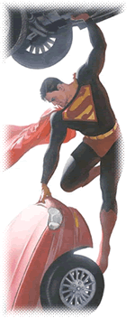

Verlag: DC (© Copyright by TM DC Comics)
Bild links: © Copyright by TM Alex Ross and DC Comics
Name: Superman
Richtiger Name: Clark Kent (Erde) bzw. Kal-El (Krypton)
Weitere Namen / Beinamen: Man of Steel (dt. Der Mann aus Stahl), Big Blue
Erstes Erscheinen: 1933 in der Kurzgeschichte "The Reign of the Superman“
Erschaffer: Jerry Siegel und Joe Shuster
Superfähigkeiten: Superschnell, Superstark, Supergehör, Superpuste, Unverwundbar, er kann fliegen, Hitzeblick, Röntgenblick (außer durch Blei), Mikroskop- und Teleskopblick
Urspung seiner Kräfte: Kal-El`s Heimatplanet Krypton besaß eine rote Sonne. An der irdischen gelbe Sonne kann sich Supermann "energetisch aufladen". Möglich ist dies, da Supermans Körper eine höhere Molekulardichte besitzt als ein menschlicher Körper. Eine weitere Erklärung ist, das auf Krypton eine höhere Schwerkraft herrscht als auf der Erde.
Lebenslauf: Superman ist der erste echte Superheld im eigentlichen Sinne, der Urvater aller späteren Comic-Superhelden wie Batman, Flash, Green Lantern usw. Außerdem ist er die Figur mit den wohl umfangreichsten Kräften. Erst viel später wurde etwas erfunden, gegen daß auch Superman eine Schwäche hat: Kryptonit. Dabei handelt es sich um Gestein von seinem Heimatplaneten. Grünes Kryptonit bewirkt bei SM den Verlust sämtlicher Kräfte und kann ihn sogar töten, wenn er ihm lang genug ausgestzt wird. Es wurde auch rotes Kryptonit eingeführt, welches SM agressiv oder äußerst gleichgültig macht.
- Weiterer Inhalt folgt -
Erzfeind: Der Erzfeind ist ein Merkmal eines klassischen Superhelden. Superman gilt als der Urvater aller Superhelden. Sein persönlicher Widersacher ist der geniale Wissenschaftler und Erfinder Lex Luthor.
Superman im Film:
- Superman (1979)
- Superman II Allein gegen Alle (1980)
- Superman III Der stählerne Blitz (1983)
- Superman IV Die Welt am Abgrund (1987)
- Superman Returns (2006)
- Man of Steel (2013)
zurück auf die Home-Seite